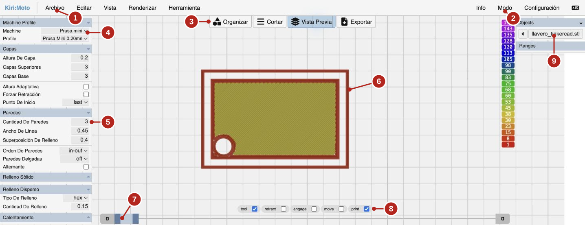
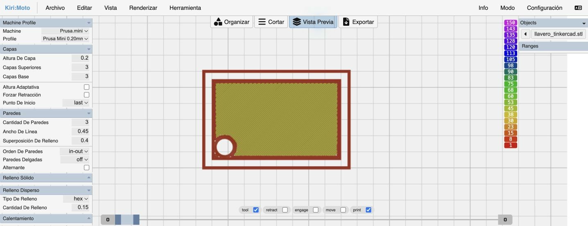
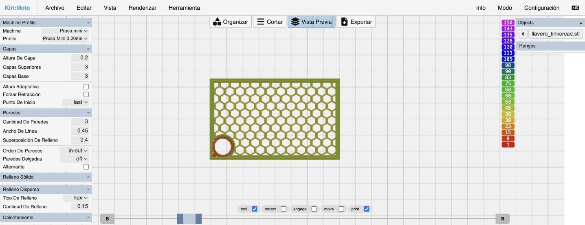
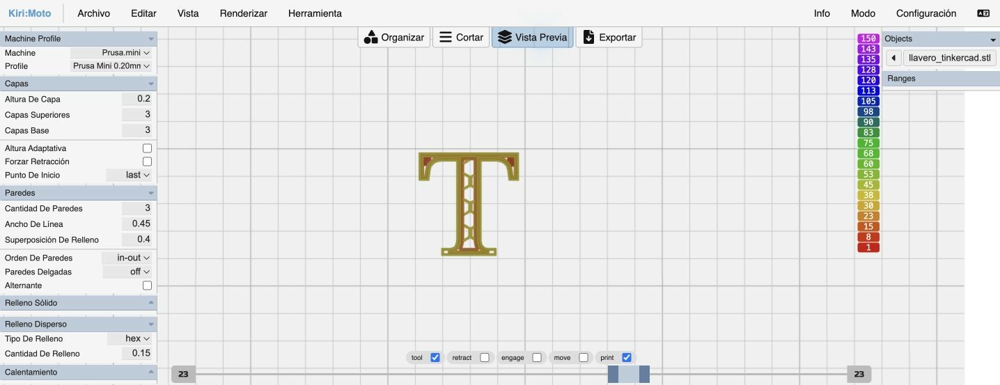
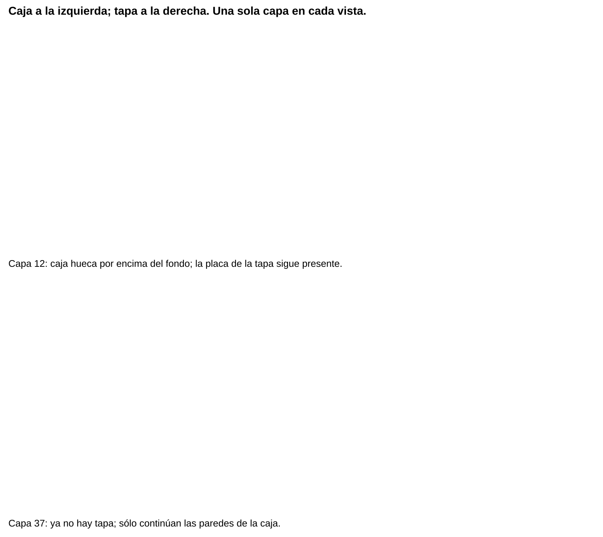
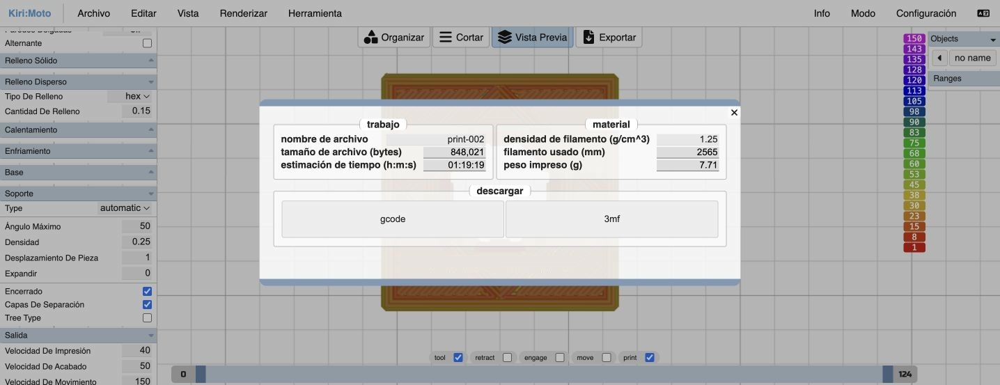

Contenido
Lo que vas a hacer
Vas a abrir tu caja del reto 3 en un laminador, ver cómo se imprimiría capa a capa y comprobar qué cambia si modificas un ajuste. No imprimirás nada: las impresoras del taller las prepara tu profesor.
1. Abre Kiri:Moto
Usaremos Kiri:Moto, un laminador gratuito que funciona en el navegador. Ve a grid.space/kiri.

- Archivo: para importar tu STL.
- Modo: tiene que estar en FDM (impresión con filamento).
- Botones principales: Organizar, Cortar, Vista Previa y Exportar.
- Máquina y perfil de la impresora.
- Ajustes: capas, paredes, relleno, soportes…
- Tu pieza sobre la bandeja.
- Deslizador de capas: elige qué capas se ven.
- Tipos de trayectoria que se muestran.
- Objetos cargados.
2. Prepara el laminador
- Comprueba que en Modo está marcado FDM.
- En Machine elige Prusa.mini y en Profile, Prusa Mini 0.20mm. Es un modelo de impresora que usamos solo para practicar; los archivos para las impresoras del taller los prepara tu profesor.
- Importa tu caja: Archivo → Importar y elige reto3.stl (o arrastra el archivo a la ventana).
- Comprueba que se ven dos piezas, caja y tapa, apoyadas en la bandeja y con su tamaño (la caja, 50 × 40).
- En los ajustes, pon: altura de capa 0.2, cantidad de paredes 3, capas superiores y de base 3, cantidad de relleno 0.15 (es decir, 15 %).
3. Corta y mira las capas
- Pulsa Cortar: el programa divide la pieza en capas. Después pulsa Vista Previa.
- Con el deslizador de capas (abajo) puedes ver una sola capa: pon los dos extremos en el mismo número.
- Recorre las capas de abajo arriba y fíjate en tres momentos:
Así se ve, por ejemplo, tu primer diseño, el llavero:



Y así se ve tu caja del reto 3:

Piensa. Miras una capa por encima del fondo de la caja y la ves rellena entera. ¿Qué pasa?
Ver respuesta
Seguramente estás viendo varias capas a la vez: pon los dos extremos del deslizador en el mismo número. Si sigue rellena, revisa en Tinkercad que el hueco de la caja esté bien.
4. Experimento: cambia una sola cosa
Para saber qué efecto tiene un ajuste, se cambia solo ese y se deja todo lo demás igual. Lamina tu caja con el caso A y después con el B o el C (tu profesor te dice cuál). Anota el tiempo y el material que calcula el programa: aparecen al pulsar Exportar; no hace falta descargar nada.
| Caso | Altura de capa | Relleno | Qué comparas |
|---|---|---|---|
| A | 0,2 mm | 15 % | Es la referencia. |
| B | 0,2 mm | 30 % | A con B: el efecto del relleno. |
| C | 0,3 mm | 15 % | A con C: el efecto de la altura de capa. |
Ejemplo con una pieza de práctica:
| Caso | Tiempo | Plástico |
|---|---|---|
| A · 0,2 mm / 15 % | 1 h 19 min | 7,7 g |
| B · 0,2 mm / 30 % | 1 h 25 min | 8,6 g |
| C · 0,3 mm / 15 % | 56 min | 7,9 g |
Piensa. Al pasar del 15 % al 30 % de relleno, ¿se gasta el doble de plástico?
Ver respuesta
No: solo un 12 % más. Las paredes, el techo y el fondo gastan buena parte del plástico, y esos no cambian. En cambio, capas más gruesas (C) ahorran mucho tiempo, aunque la pieza queda menos lisa.

5. Guarda tu trabajo
Haz una captura de pantalla de una capa interior de tu caja (con el número de capa visible) y guárdala como laminado_reto3.png. La subirás a la carpeta de tu equipo cuando forméis los equipos.
Compruébalo
Ordena los pasos para ver cómo se imprimiría tu pieza.
- Exportar la pieza desde Tinkercad como STL
- Importar el STL en Kiri:Moto y comprobar que está apoyado en la bandeja
- Elegir la altura de capa, las paredes y el relleno
- Pulsar Cortar
- Revisar las capas en Vista Previa
- Anotar el tiempo y el plástico que calcula el programa